{kind=link}
TAKE
Full-height 1px rules as the primary structure instead of cards or padding.
Rotated marginal labels — chapter, date, status — so metadata never eats the column.
Caption-under-art with the full credit stack, exactly like a plate in a catalogue.
Real sites, screenshotted August 2026, chosen because each one solved the presentation problem eski has: a small catalogue of other people's artwork that has to look programmed rather than empty. Every one keeps the sage ramp, Gnomon and Jost — what changes is the ground, the density, the ornament and how art is framed. Pick the ones you want and I'll turn them into skills and restyle home, profile, reader and studio against them.
The page is a printed listings sheet: hard vertical rules edge to edge, labels rotated into the margins, titles centred over their column.
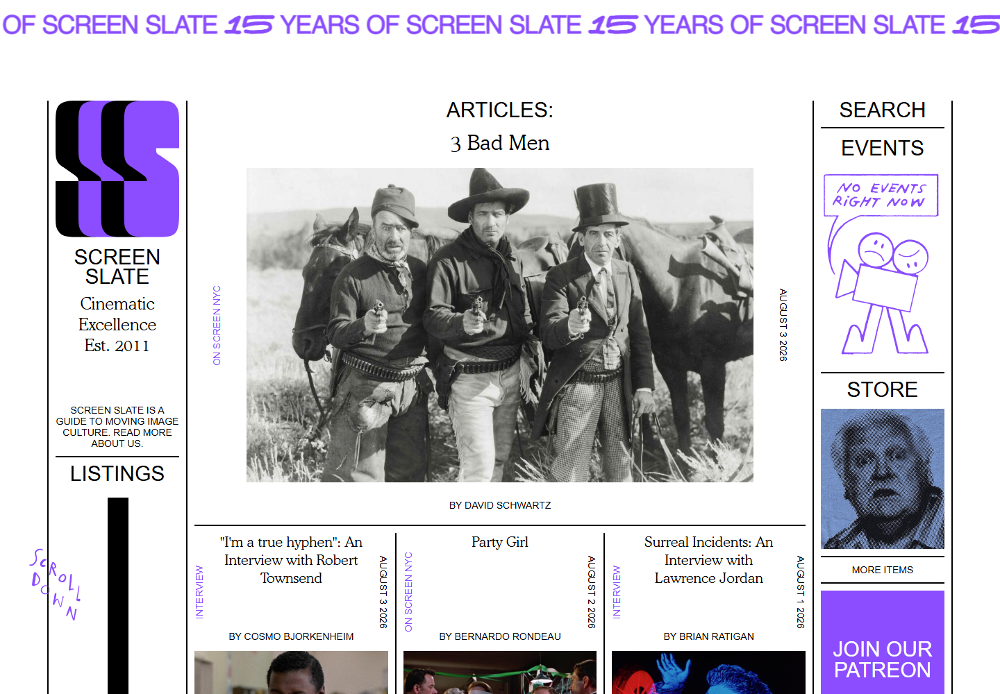
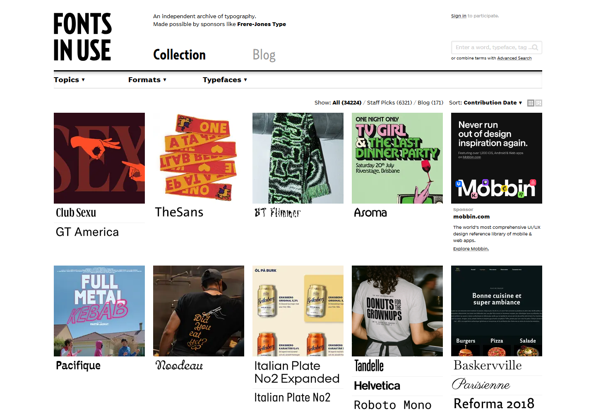
Full-height 1px rules as the primary structure instead of cards or padding.
Rotated marginal labels — chapter, date, status — so metadata never eats the column.
Caption-under-art with the full credit stack, exactly like a plate in a catalogue.
The hand-drawn doodles and the scrolling marquee band. Charming there, twee here.
Centred body text. Titles can centre; paragraphs must not.
Reads as a magazine, not a product. The studio would fight it, so the studio would stay on the current grid and only the public pages take this.
home, comic detail, profile. This is the strongest fit for the credits work, because a credit list wants to be a caption.
paper ground, near-black rules, sage used only for the accent and the vertical labels. no new hue.
A cinema that also writes: warm ground, a display face with real character, a small icon nav, and a "now playing" paragraph written by a person every week.
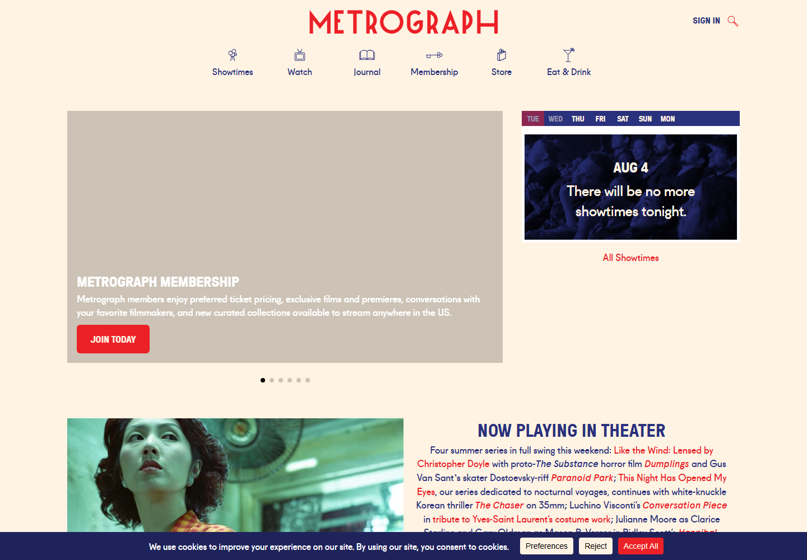
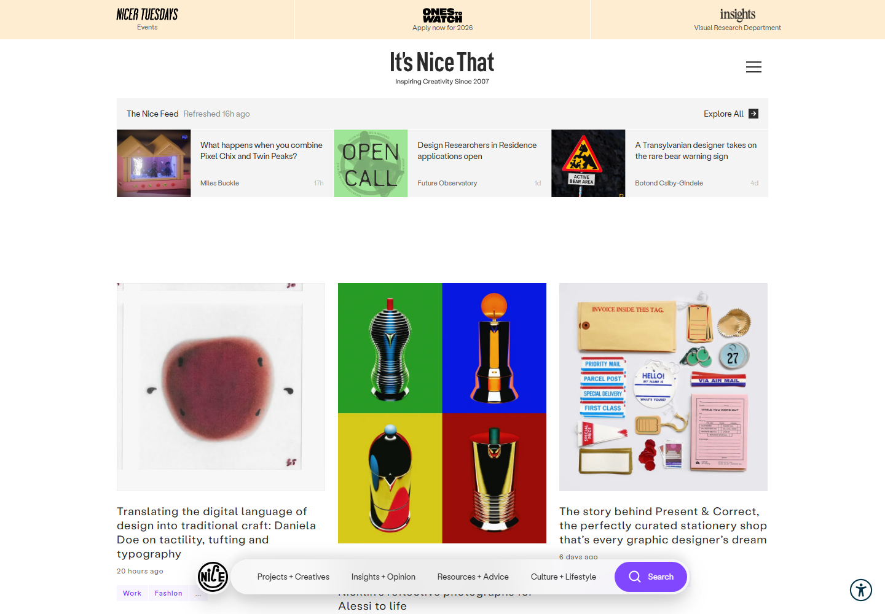
The warm ground. eski is currently cold; a paper-warm ground makes hosted art feel framed rather than clinical.
Prose as a navigation surface — a paragraph where every title is a link beats a grid of twelve identical cards.
Icon-over-word nav. Six items, drawn once, no hamburger.
The red/navy pairing and the deco face — that is their identity, not ours. Gnomon does the same job.
The carousel. Vertical only.
Warm ground plus sage can go municipal-green if the neutrals drift. The paper tones have to stay very slightly sage-biased, not beige.
home and profile. It is the friendliest of the five and the one most likely to make a first-time reader stay.
the light half of the sage ramp doing the work, deep sage for type. warmer than today by shifting paper up two steps, not by adding a hue.
Every cover sits on its own flat block of colour, so a catalogue of wildly different artwork reads as one curated shelf.
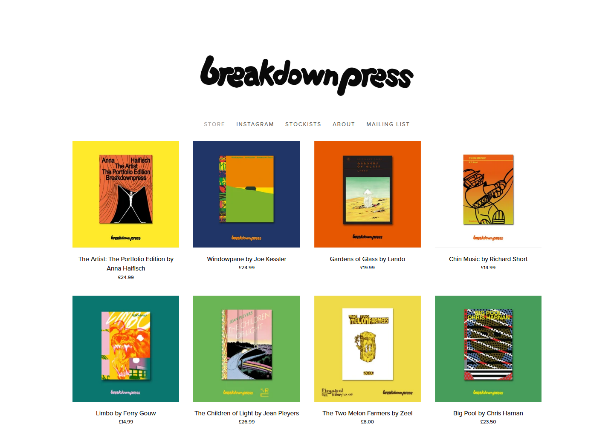
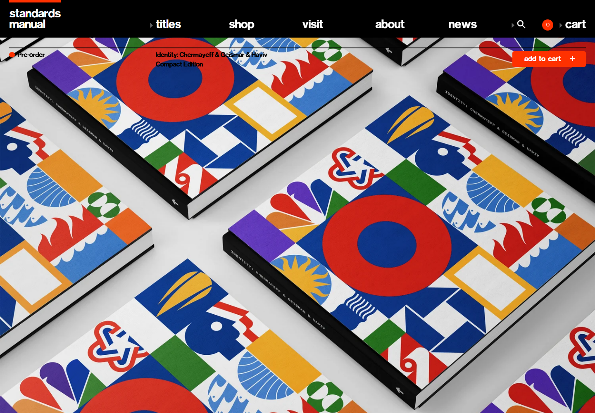
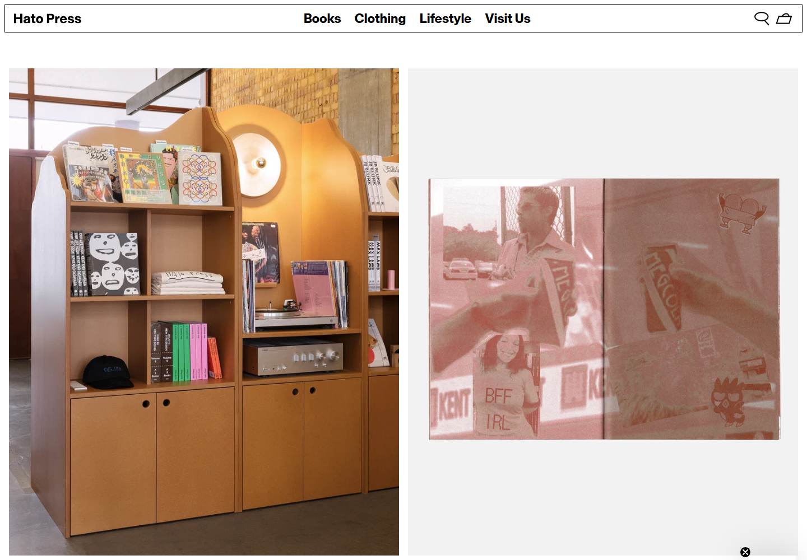
The colour field behind each cover, sampled from the artwork itself and quantised to a step on the sage ramp so the shelf stays one hue.
Identical card geometry with a varying ground — the variation is colour only.
Single-ink duotone for placeholders, empty states and low-res previews.
Their full-spectrum palette. Sampling to sage keeps the rule that art is the only place colour is allowed to be loud.
Centred product captions under everything.
Quantising a sampled colour to a sage step can fight the cover it came from. Needs a contrast floor and a fallback field, which is real work.
home, browse, shelf. The one direction that materially improves how a mixed catalogue of other people's art looks.
the whole ramp used as fields. six possible grounds, one per cover, chosen by sampling the art and snapping to the nearest step.
Black, tiny, and permanently live: a fixed status bar at the top, a mosaic of small tiles below it, and no space wasted anywhere.
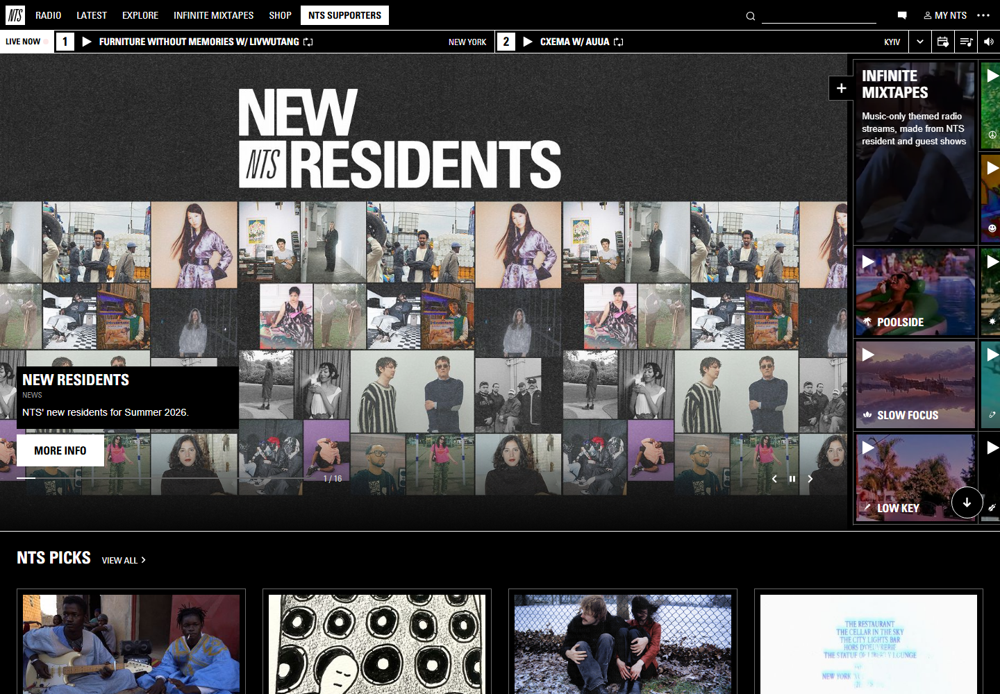
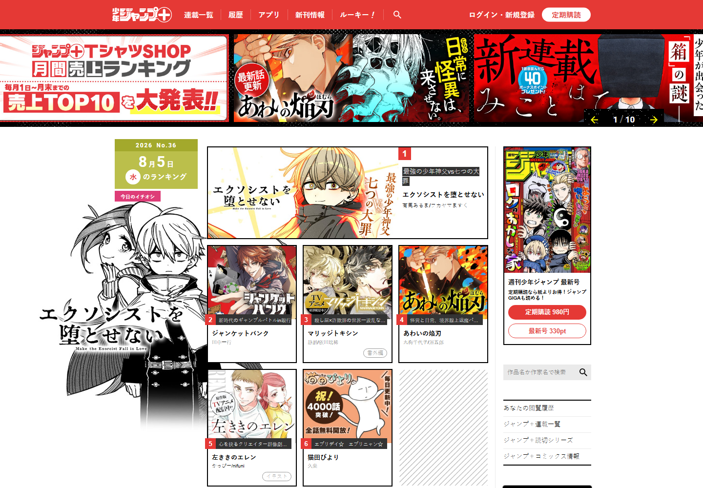
The live strip. eski has something genuinely live — what is playing, and what needs a voice this week — and it belongs pinned, not buried.
Irregular mosaic instead of a uniform grid, so covers keep their own aspect ratios.
Dated, numbered rankings. Density reads as activity, which is what a small platform needs to project.
Pure black and the noise texture. eski's void is #0C130F and should stay sage-biased.
Jump's promotional shouting — the red banners, the exclamation stacking.
The hardest of the five to keep accessible: 11px uppercase on near-black fails easily, and an always-dark site fights the reader's own dark toggle.
browse, contribute, studio. The only direction that suits the studio as well as the public pages.
the dark half of the ramp, top to bottom. sage-300 and lighter for anything that must be read.
One work, centred, on a flat neutral ground, with more empty space than any other direction would allow. This is the fixed version of the marquee.
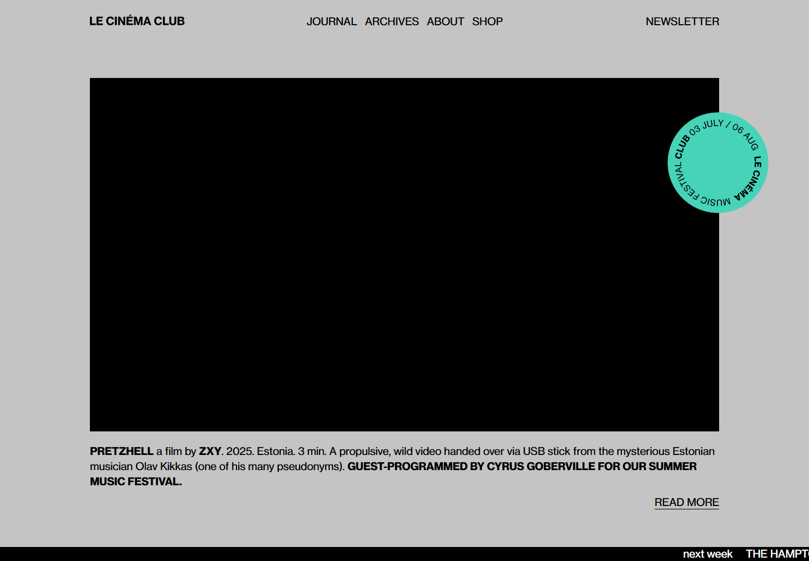
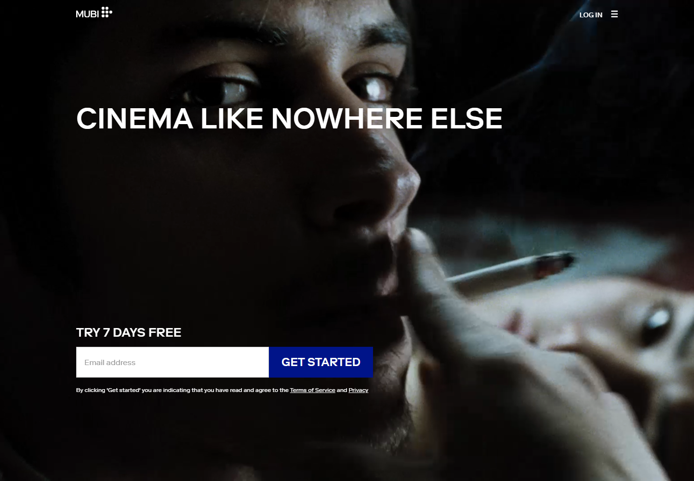
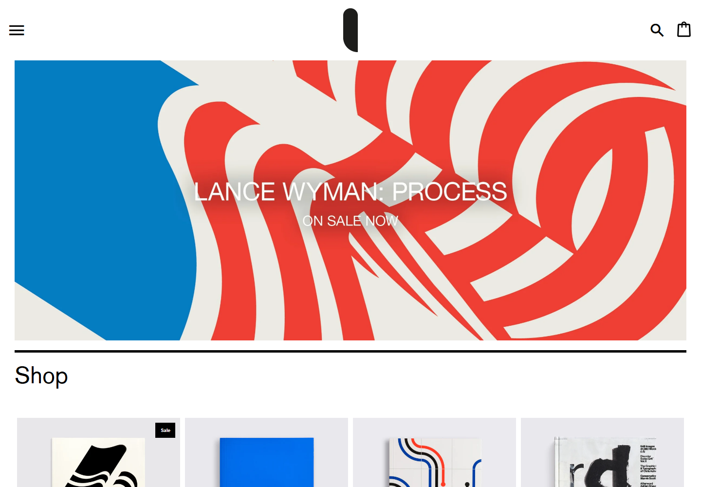
The flat neutral ground instead of a scrim over art. My first marquee dimmed the covers to make type readable; Le Cinéma Club just puts the art in a field and sets the type below it, which respects the artwork far more.
The credit paragraph: title bold, everything else regular, all in one sentence.
The bottom ticker naming what is next. Cheap, and it makes a rotation feel scheduled.
The single acid accent. Sage already has an accent; a second one is the pink problem again.
Their near-total absence of navigation. eski needs a shelf and a studio link.
Emptiest of the five. With three comics it reads as considered; with forty it reads as an obstacle, so it needs the plain index directly underneath.
home and reader. The reader especially — a flat neutral field around the page is exactly what a comic reader should be.
a mid-tone ground, not white and not black. the art is the only thing lighter or darker than the page.
| Surface | Wants | Best of the five |
|---|---|---|
| home | look programmed, not empty | gallery, or repertory if you want warmth over austerity |
| browse / shelf | make mismatched art cohere | flat field |
| comic detail | credits as the main event | broadsheet |
| profile | a body of work, plus performances | broadsheet, or repertory |
| reader | disappear around the art | gallery |
| studio | information rate, no ornament | station |
Gallery for the reader and home, flat field for browse, broadsheet for detail and profile. Those three share a grammar — flat grounds, square corners, art framed rather than decorated — so they read as one site rather than three. Station stays for the studio, where nobody but you and other authors ever goes, and where its density is a feature.
Repertory is the odd one out. It is the most immediately likeable and the least compatible with the other four, because its warmth comes from ornament the others deliberately refuse. Worth choosing if you want eski to feel like a place rather than a tool, but it should then win everywhere rather than share.
All five keep the sage ramp, Gnomon and Jost untouched, and none of them introduces a second hue. Tell me which you want and I'll write them as skills and restyle the core pages against them, one surface at a time so you can see each before the next.
{kind=link}
{kind=link}
{kind=link}
{kind=link}